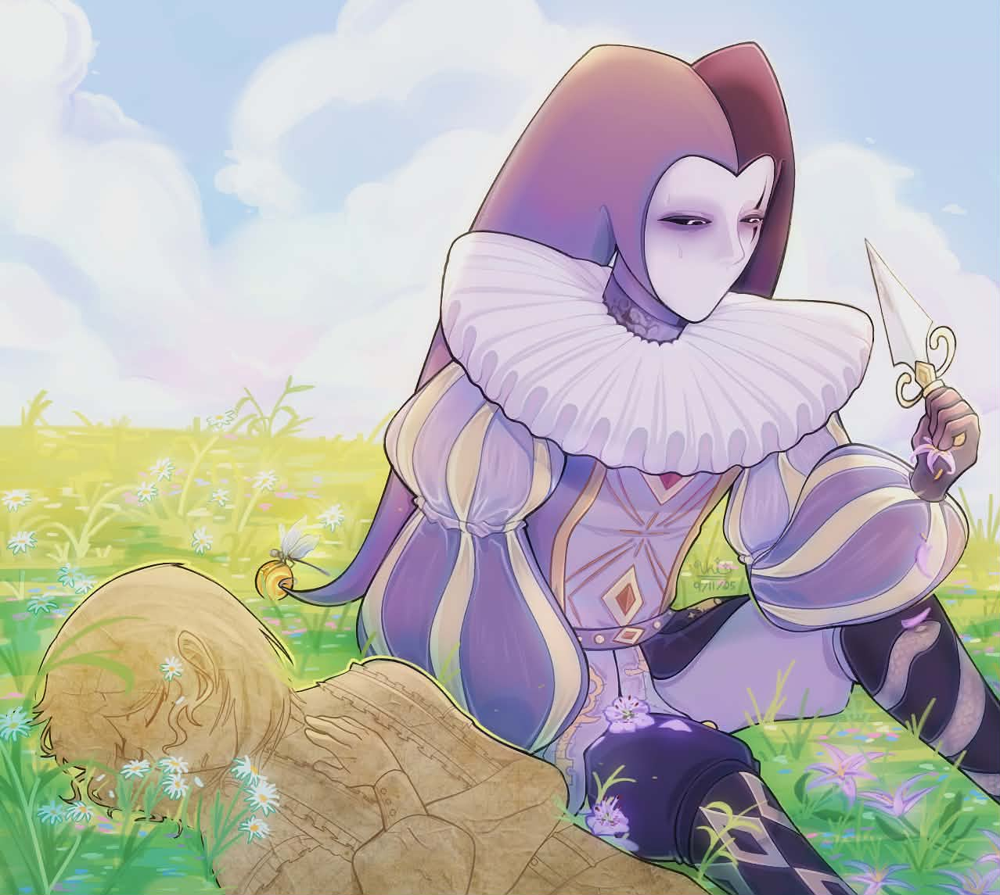
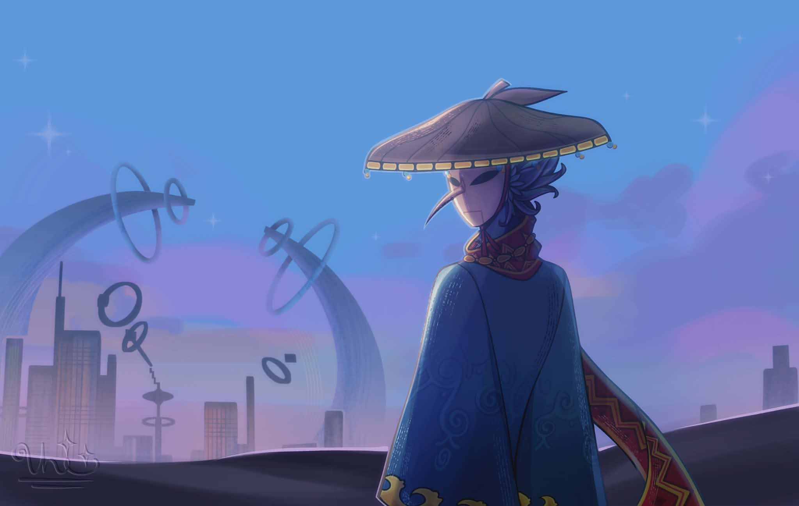
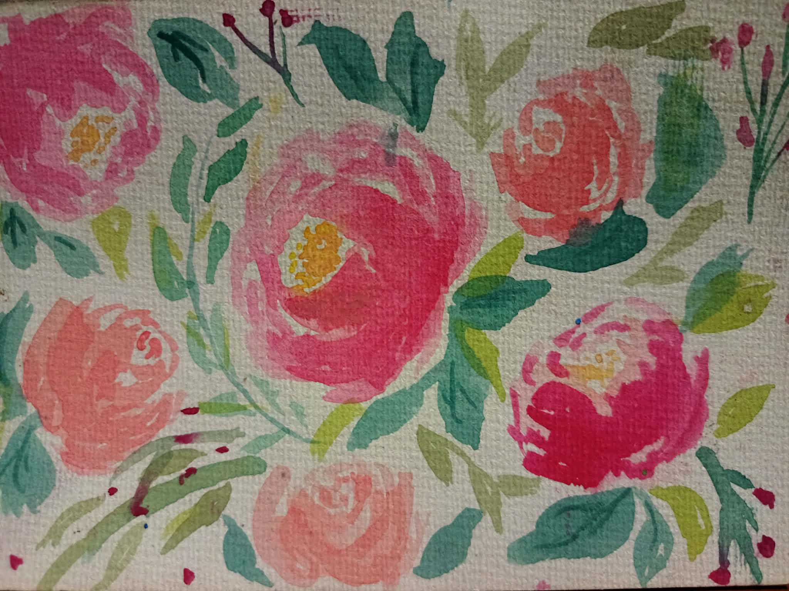
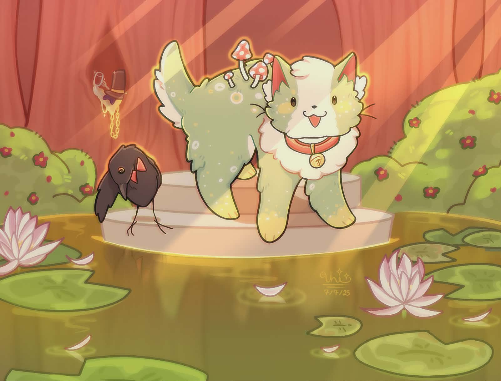
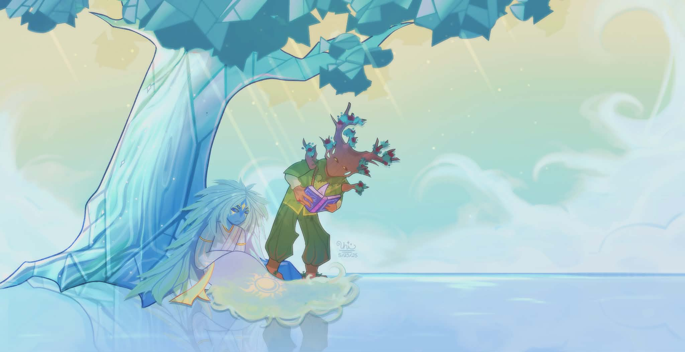

The following information comes from real answers from high school students in the Philippines. These chosen individuals practice either traditional or digital illustrations. They shared their perspectives on the problem of Generative AI art through open-ended written questionnaires. This is an output for a research project called "Perspectives of 21st Century Artists in the High School Department on the Problems of Art by Generative Artificial Intelligence.”
-How it steals and copy from works made by other artist. In result, many artists perceive that neither the system or prompter should be the author of an AI generated art piece.
"...No one really owns the artwork as whole as it is based on/trained on the intellectual property of other artist. There is no originality... It is simply recreation..." -(participant 2)
"No one, not the prompter and not even the machine. It takes from others works, tarnishes them... It is disrecpectul to not ask permission at all. It relies on human guidance... Do you really think if would still improve if humanity's work wasn't around?" -(participant 3)
"It can be plagiarism when AI copies styles or parts of toher artist works without credit" -(participant 4)
"The artwork belongs to no one, AI is not a person. AI utilized to generate "art," have been using the art of actual artist without their consent and while that alone does not count as plagiarism, what does is how people claim gen art as theirs" -(participant 5)
"Nobody since AI uses other arts to make a frakenstein-ish painting... A blend of palgiarism from many people..." -(participant 6)
"...It mixes up random art to make that... AI just do copy and paste and they will say that its their own work." -(participant 7)
"Generally... the author would be who wrote the prompt.. Personally, no one should be considered the author... AI is made up of ideas or artstyles that are takem from real artist.. Deprive real artist of recognition" -(participant 8)
"AI cannot generate art, it gets it from different artist. ...It copies different artist's artsyles" -(participant 9)
"As an artist, I understand that generative AI is trained based on artwork in the public domain; specifically social media and other such platforms. Often, it is done without the artist's consent and copies the artwork to generate images." -(participant 10)
-That working with generative AI yielded no learning benefits, as it lacks creativity.
-However, others viewed it as a possible learning tool, used for finding inspiration instead. Creating a divide.
"I don't think there us garm in using AI generated art for inspiration... but artist should avoid using these as their own creation or property." -(participant 2)
"...It can't exactly teach you anything at all cause it takes/steals itger artust work. Gen AI does not know lightingm texture, ambianve and emotions work... It's an insult, disgust and scares me. It has no other purpose other than to replace artist..." -(participant 3)
"Artist may use AI to get new ideas, but some avoid it to keep theirnwork original and personal. Gen AI.. can inspire creativity but should be used responsibly." -(participant 4)
"...If an artist is aiming to use it as a learning material or finished output. AI is not accurate or is it credible. AI art is fraudulent piece of media, made up of scaps of actual artwork..." -(participant 5)
"It is best for learners to understand to elevate their art and used as a tool not a shortcut. ...A wat to develop your artwork and learn." -(participant 6)
"...It strips them of creativity... Deprives thos who wan to make artwork themselves." -(participant 8)
"Becayse Gen AI "artworks" are not artworks, and will never be one/ It is disgusting... AI simply copies it" -(participant 9)
"As an artist, I see no point in using generative AI in creating artwork. For me, there is a level of complexity that technology simply can't replicate, so I see no point in using or working with it. It means the death of creativity" -(participant 10)
-That it lacks human authentic skills like emotions and experiences.
-That it tends to just copy rather than create, devalueing its uniqueness.
"I disagree that art can in any way be truly created without the existence of real consciousness. Computer algorithms and the brain are not the same. It can eventually create unoriginal works that overshadow unique works." -(participant 2)
"The meaning of art is: the expression or application of human creative skills and imagination..." -(participant 3)
"AI cannot create art alone because real art comes from human emotions and experiences. When many copies exist, it is no longer rare or special" -(participant 4)
"Art is defined as the application of human creative skill and imagination, thefore no. When someone mass-produce a particular artwork, it undermines the importantance of the original piece." -(participant 5)
"On a technical side not yet, as it mostly takes from other artwork. Rarity, creativity and effort can be easily taken away then used to garner support and recognition which ruins percpetion of all artworks." -(participant 6)
"No.. its just a copy and paste of the art. Mass production erodes arts unique value." -(participant 7)
"Personally, art is a way for artist to express them selves, and how they view the world... How would a robot have the ability to make an artwork with such a meaning. It also becomes monotone... affecting the artist." -(participant 8)
"AI cannot generate art, it gets it from different artist. ...It copies different artist's artsyles" -(participant 9)
"There is a level of complexity, emotion, and skill that goes into making an artwork that AI cannot copy. Something that adds value is the inclusion of human imperfection. This is lost in mass production. " -(participant 10)
-That due to the lack of human expression, they couldn't consider it as true art at all. So they concluded that it is impossible that art can reside in generative pieces.
"Gen art can imitate and alot of times replace. But it will never be trye art. It should be marginalized into its own category of "art." -(participant 2)
"Nope, Like I said the use of AI in art might as well have its own word. It is no human nor living being unlike as it's meaning of art, human-made." -(participant 3)
"No, because again, art is defined as the expression of the human skill and creativity." -(participant 5)
"I see it as a learning tool not a form of art" -(participant 6)
"Generative art cannot gully be considered true art" -(participant 7)
"It can't be. Why? Becaise it has no human emotion, uniqueness and sense of originality." -(participant 8)
"No, it can't be, AI cannot generate original art." -(participant 9)
"In my opinion it is not considered art based on my personal definition. However, I am not quite sure where it would reside in." -(participant 10)
-That generative systems are unoriginal. Only copying artwork created by human hands. Arguing that creativity can only reside in humans.
"For me, it is an inherently biological and conscious trait which cannot be possessed by trained gen systems" -(participant 2)
"Nah, no original thought in there. I remember asking for it to makea story and it's the most generic plot. Only relies to general stuff." -(participant 3)
"No, creativity is a unqiue human skill/talent, built from individual experience... AI is incapable of recreating the application of creativity, because it lacks humanity." -(participant 5)
"Not yet it needs a prompt not an independent thinking complex." -(participant 6)
"Generative systems mimic creativity but lack true intention" -(participant 7)
"No because what they generate is already talem from original sources(artist)" -(participant 8)
"Gen systems would never be creative, because creativity comes from our minds, our brain." -(participant 9)
"No, creativity is something that is human" -(participant 10)
Many agree that its emergence is unavoidable due to how accepting people are now of new technologies.
But they do not believe that it can present are more dynamically, as it again lacks that natural human capabilities to present the feeling of art.
"More and more companies and individuals perceive gen art as cost-effective alternative..." -(participant 2)
"It's a trend and an ongoing one... They will continue to be ignorant of the cons to maintain a more positive perspective." -(participant 3)
"Gen art is unavoidable because postmodernty accepts technology abd bew creatuve methods" -(participant 4)
"It is inevitable. There is a natural stubborness... refusing to stop meddling what is harmful. AI is incapable of even experiencing art at akkm vecause it is incapable of understanding art." -(participant 5)
"Companies push it as an innovation without restrictions when it needs it. Its plagiarism." -(participant 6)
"Postmodernity openness makes gen art inevitable." -(participant 7)
"Its not avoidablee.. But it is because people have become dependent on AI." -(participant 8)
"Rapid global modernization leads to the development of AI to aid humanity, alongside that comes improvements to generative AI. It makes art more accessible to more people but I do not personally think it is more dynamic that other non-AI methods." -(participant 10)